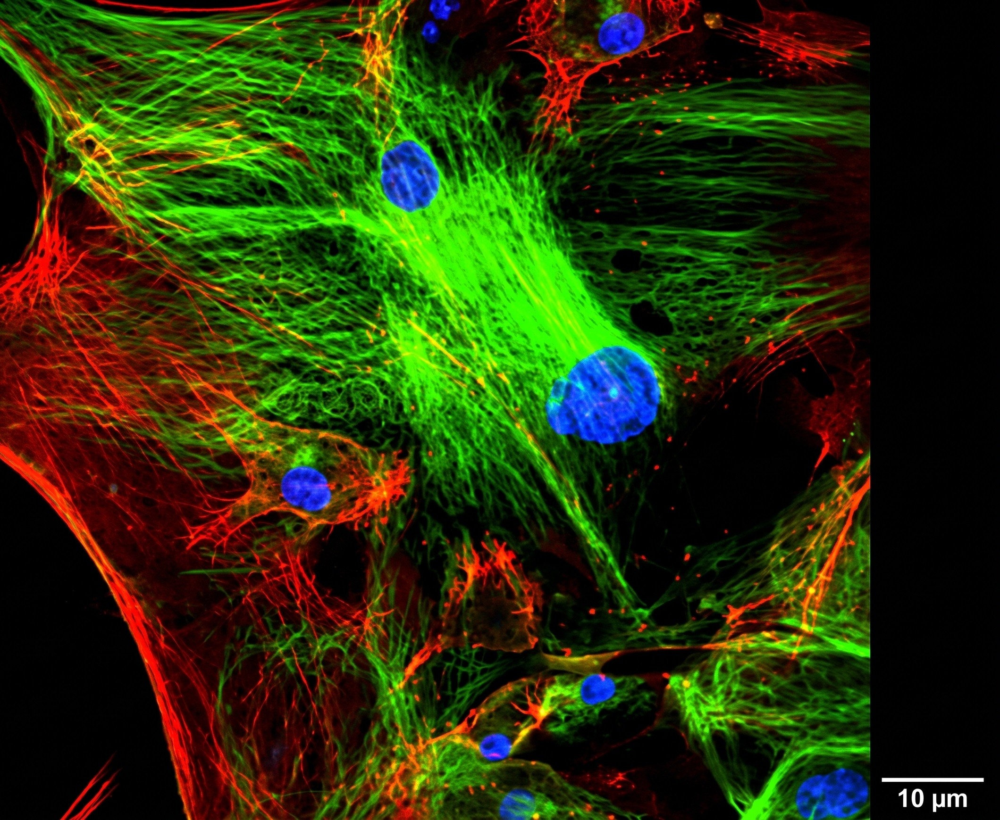

Неоколлагеногенез: биохимия, ресурсы и сроки перестройки кожи
Неоколлагеногенез — образование нового коллагена клетками соединительной ткани. Синтез отдельных молекул и появление заметного изменения плотности кожи происходят в разных временных масштабах: биохимические этапы нельзя делить на три обязательных месяца, а клинический результат зависит от метода и состояния ткани.
Ключевые тезисы (Главное)
- Образование коллагена включает внутриклеточный синтез проколлагена, внеклеточное созревание и организацию волокон в матриксе; эти процессы перекрываются во времени.
- Аминокислоты необходимы для построения белка, витамин C и железо участвуют в гидроксилировании, а медь-зависимая лизилоксидаза — в формировании поперечных связей.
- Недели и месяцы наблюдения после процедуры отражают перестройку ткани, а не обязательную длительность сборки одной молекулы. Результат не гарантирован и не всегда окончателен к 3–4 месяцам.
- Препараты железа не назначаются «для коллагена» без показаний; обследование и коррекция дефицитов определяются клинической ситуацией.
От клеточного сигнала к матриксу
Фибробласты воспринимают химические и механические сигналы из окружающей среды. Через рецепторы факторов роста и контакты с матриксом меняется экспрессия генов — активность производства определённых белков. Ответ зависит от популяции клетки, воспаления, механического натяжения и общего состояния ткани.
Для эффекта процедуры важны обоснованные показания, контролируемое воздействие и способность ткани восстанавливаться. Прямое попадание к границе дермы с гиподермой не является универсальным обязательным условием: фибробласты есть в разных отделах дермы, а некоторые наружные лекарства также влияют на дермальный матрикс. 1 2
Биохимия и тайминг: три взаимосвязанных этапа

Коллаген относится к структурным белкам внеклеточного матрикса. У фибриллярных коллагенов, включая I и III типы, образование прочной ткани включает несколько уровней обработки.
| Этап | Клеточные и внеклеточные события | Как трактовать сроки |
|---|---|---|
| Внутриклеточный синтез | Трансляция цепей на рибосомах шероховатого ЭПР; гидроксилирование пролина и лизина, гликозилирование, образование тройной спирали проколлагена; обработка и транспорт через комплекс Гольджи | Производство и секреция отдельных молекул не требуют обязательного месяца |
| Внеклеточное созревание | Удаление концевых пропептидов, сборка молекул в фибриллы; формирование поперечных связей с участием лизилоксидазы | Скорость зависит от ткани и условий; процесс идёт одновременно с новым синтезом |
| Организация и ремоделирование | Формирование волокон, их ориентация по нагрузке, расщепление повреждённых компонентов и перестройка сети | Клинически значимые изменения развиваются в течение недель и месяцев и могут продолжаться дольше |
Проколлаген секретируется с концевыми пропептидами; их удаление происходит преимущественно после выхода из клетки. Поэтому описание готового тропоколлагена как единственного продукта, который клетка непосредственно «выбрасывает» наружу, неточно. Понятия «микрофибрилла», «фибрилла» и «пучок» также не задают универсального помесячного графика.
Числа «один месяц внутри клетки, один месяц снаружи и ещё два месяца на встраивание» не являются подтверждённым общим законом биохимии. Сроки клинического наблюдения должны быть привязаны к конкретному вмешательству, а не к такой схеме.
Ресурсы синтеза: белок и кофакторы
| Компонент | Биологическая роль | Практический вывод |
|---|---|---|
| Аминокислоты | Исходный материал для белковых цепей; коллаген богат глицином, пролином и гидроксипролином | Требуется полноценное питание; дефицит белка нельзя компенсировать одной процедурой |
| Витамин C | Поддерживает работу ферментов гидроксилирования, необходимых для устойчивой структуры коллагена | Коррекция недостаточного поступления важна; избыток не гарантирует усиленного результата |
| Железо | Входит в систему кофакторов пролил- и лизилгидроксилаз | Лечение дефицита проводится по медицинским показаниям |
| Медь | Необходима для активности лизилоксидазы, участвующей в поперечном связывании коллагена и эластина | Биохимическая роль не является основанием для профилактического приёма меди |
| Кислород и метаболические ресурсы | Необходимы для клеточного обмена и ряда ферментативных реакций | Состояние кровоснабжения, заболевания и курение могут влиять на восстановление |
Витамин C является кофактором синтеза коллагена; тяжёлый дефицит нарушает целостность соединительной ткани. Однако из этого не следует, что большие дозы при достаточном питании ускоряют тканевую перестройку после косметологического вмешательства. 3
Белковое питание
Полноценные источники белка обеспечивают незаменимые аминокислоты, которые организм не синтезирует в достаточном количестве. Рацион может включать рыбу, мясо, яйца, молочные продукты, бобовые и другие продукты с учётом переносимости и пищевых ограничений. Количество белка индивидуализируется, особенно при заболеваниях почек и других состояниях, требующих лечебного питания.
Железо: источник не равен усвоенной дозе
Справочная таблица: источники железа в продуктах
| Группа продуктов | Особенности | Ограничение интерпретации |
|---|---|---|
| Мясо, птица, рыба и субпродукты | Могут содержать гемовое и негемовое железо | Содержание зависит от вида продукта, части туши и приготовления |
| Бобовые, крупы, орехи, зелень | Преимущественно негемовое железо | Усвоение зависит от состава приёма пищи; витамин C может его увеличивать |
| Яйца и другие животные продукты | Само животное происхождение не означает преобладания гемового железа | Нельзя объединять все продукты в категорию одинаковой биодоступности |
Таблицы «мг на 100 г» требуют указания конкретного продукта и состояния — сырого, сухого или приготовленного. Произвольные числа без такого уточнения не подходят для оценки рациона. При подтверждённом дефиците врач выясняет причину и решает, достаточно ли изменений питания или требуется лечение. 4
Какие анализы нужны перед процедурой
Обязательной панели «на коллаген» для каждого пациента нет. Общий анализ крови, ферритин и другие исследования назначаются по жалобам, анамнезу и факторам риска. Ферритин отражает запасы железа, но может повышаться при воспалении, поэтому интерпретируется в контексте. Общий белок крови сам по себе не доказывает достаточность белкового питания.
Железодефицит и анемия требуют медицинской оценки, однако утверждение, что низкий ферритин является доказанной основной причиной неудачи любых коллагеностимулирующих процедур, выходит за пределы имеющихся данных.
Питьевой коллаген и добавки
| Утверждение | Корректная интерпретация |
|---|---|
| «Выпитый коллаген сразу становится коллагеном кожи» | Белок переваривается до аминокислот и пептидов; адресная доставка готового каркаса в кожу не происходит |
| «Гидролизованный коллаген заменяет полноценный белок» | Он может служить источником отдельных аминокислот, но не является полноценной заменой рациона |
| «Пищеварение не справится с негидролизованным белком» | Организм умеет переваривать белки; предварительный гидролиз не доказывает клиническое превосходство любого продукта |
| «Больше витаминов и железа — больше коллагена» | Сверхпотребление не гарантирует пользу; избыток может вызывать нежелательные эффекты |
Оценка перорального коллагена должна опираться на конкретный состав, дозу, дизайн исследования и клинически значимый результат. Добавки не заменяют фотозащиту, лечение заболеваний и коррекцию подтверждённых дефицитов; обещание гарантированного лифтинга необоснованно. Высокие дозы витамина C могут вызывать желудочно-кишечные симптомы и требуют осторожности при определённых заболеваниях. Препараты железа без показаний могут причинять вред. 3 4
Практический смысл: календарь наблюдения
| Период | Возможные процессы и наблюдения | Чего нельзя заключать |
|---|---|---|
| Первые дни | Реакция на травму, прогрев или введённый материал; отёк и временная гидратация | Раннее увеличение объёма не доказывает образование зрелого коллагенового каркаса |
| Последующие недели | Восстановление, клеточная активация и начало или продолжение ремоделирования | Отсутствие быстрого лифтинга не позволяет автоматически признать метод неэффективным |
| Несколько месяцев | Постепенное изменение текстуры или плотности при ответе на лечение | Срок 3–4 месяца не гарантирует выраженного результата и не всегда означает конец перестройки |
Сроки контрольных осмотров определяются конкретным препаратом или аппаратным протоколом. Для оценки полезны фотографии при одинаковом освещении, анализ переносимости и согласованные показатели результата. Курение и продолжающееся УФ-повреждение ухудшают условия сохранения матрикса; ежедневная фотозащита остаётся важной частью стратегии.
Реабилитация: норма и тревожные сигналы
| Физиологическая норма | Повод сразу обратиться к врачу |
|---|---|
| Небольшая болезненность, умеренный отёк и покраснение в пределах плана восстановления | Нарастание боли, распространяющаяся краснота, лихорадка, гной или болезненные узлы |
| Постепенное исчезновение точечных следов и небольших синяков | Побледнение или сетчатая синюшность кожи после инъекции, особенно с болью или похолоданием |
| Отсутствие быстрых структурных изменений при удовлетворительном самочувствии | Изменения зрения, слабость, нарушение речи или затруднение дыхания требуют экстренной помощи |
После процедуры соблюдаются индивидуальные рекомендации: мягкое очищение, назначенное увлажнение, фотозащита и временное исключение раздражающих средств при повреждённом барьере. Массаж, интенсивное прогревание и дополнительные процедуры без согласования не проводятся. При подозрении на осложнение нельзя ждать планового контроля результата через несколько месяцев. 5
Частые вопросы пациентов (FAQ)
Новый коллаген действительно строится строго три месяца?
Нет. Это возможный период наблюдения после некоторых вмешательств, а не длительность синтеза каждой молекулы. Этапы перекрываются, а сроки тканевой перестройки различаются.
Нужно ли всем сдавать ферритин перед коллагеностимуляцией?
Нет универсального требования. Исследования назначаются при симптомах, факторах риска или иных медицинских показаниях. Результат оценивается с учётом воспаления и общей клинической картины.
Можно ли заранее принимать железо и витамин C без обследования?
Железо не применяется без показаний. Витамин C предпочтительно получать в достаточном количестве с питанием; необходимость добавок и их дозы оцениваются отдельно. Профилактический приём высоких доз не гарантирует усиления результата.
Почему улучшение иногда заметно уже через неделю?
Причиной могут быть отёк, гидратация, носитель препарата и изменение поверхностного рельефа. Ранний эффект сам по себе не доказывает завершение ремоделирования; его значение зависит от метода.
Источники
- 1 Исследование фибробластов разных анатомических зон дермы.
- 2 Рандомизированное исследование наружного третиноина и маркеров синтеза проколлагена.
- 3 NIH Office of Dietary Supplements. Vitamin C: Fact Sheet for Health Professionals.
- 4 NIH Office of Dietary Supplements. Iron: Fact Sheet for Health Professionals.
- 5 FDA. Dermal Fillers (Soft Tissue Fillers).
Материал носит информационно-образовательный характер и не заменяет очную консультацию врача-косметолога. Процедуры подбираются индивидуально после диагностики.